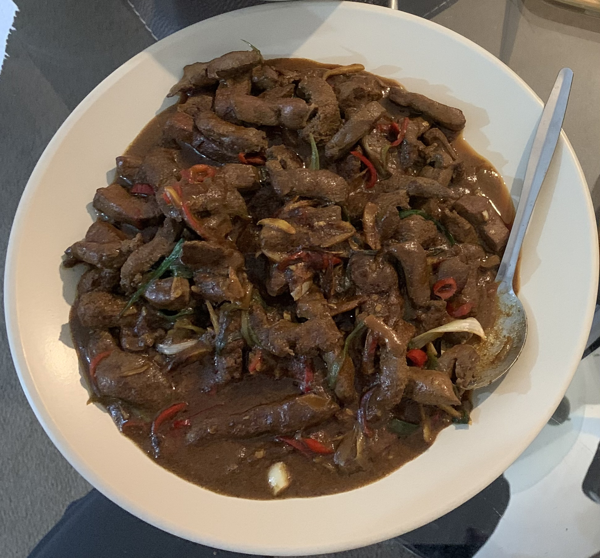

My Girlfriend's Signature Ox Liver

Description
My absolute favourite dish by my wonderful girlfriend.
Randomly bought a packet of ox liver from ASDA as it was so cheap. As it turns out, my girlfriend can still do wonders out of this, and it is packed full of vitamins that one normally wouldn't get in other food.
Ingredients (portion for 2)
- Ox liver 600g
- Garlic x 1
- Spring Onion x 1
- Red Chilli x 1
- Ginger x 1
- Light soy sauce
- Cooking wine
- Salt and pepper(both black and white)
- Oyster Sauce
- Cornflour
Steps
- Soak the liver inside water for 2 minutes and wash the liver by hand, repeat this step until there are no visible blood in the water.
- Dry the liver and marinate with salt, pepper(black and white), soy sauce, cornflour and oyster sauce for 30 minutes.
- Slice some ginger, garlic, spring onion and chills while the liver is marinating.
- Put a wok on a high heat, add generous amount of cooking oil when the pan is hot, and fry the ginger, liver and the garlic.
- Once the liver is almost cooked, pour some cooking wine and add in the spring onion, chillis.
- Serve!
Back to main page